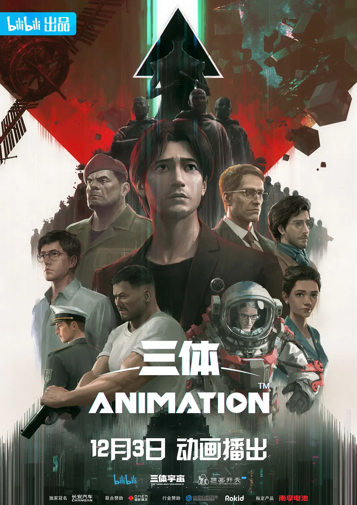

Three Bodies
Zhang
"Three Bodies" animation is adapted from the science fiction novel of the same name created by Liu Cixin and co-produced by Bilibili, THE THREE-BODY UNIVERSE and YHKT ENTERTAINMENT. It is understood that "Three Bodies" spent 5 years from pre-preparation to production scheduling, and is Bilibili's largest capital investment in animation projects.
From the first and second set of content, "Three Bodies" animation selected the second part of the original series of novels "Three Bodies II: Dark Forest" as the main plot, opening with a long shot to the audience to restore the "Three Bodies" novel in the first part of the classic scene "Guzheng action" - - In the narrowest section of the Panama Canal, the ship Judgment Day is sliced into dozens of thin slices by more than 50 thin blades of nanomaterials.
In addition to animation, Tencent Video's film and TV drama version of "Three Bodies" has been filmed, Youzu Network's (002174.SZ) "Three Bodies" IP game series is expected to be launched in the next three to five years, and streaming giant NFLX has released a behind-the-scenes featurette on the drama version of "Three Bodies".